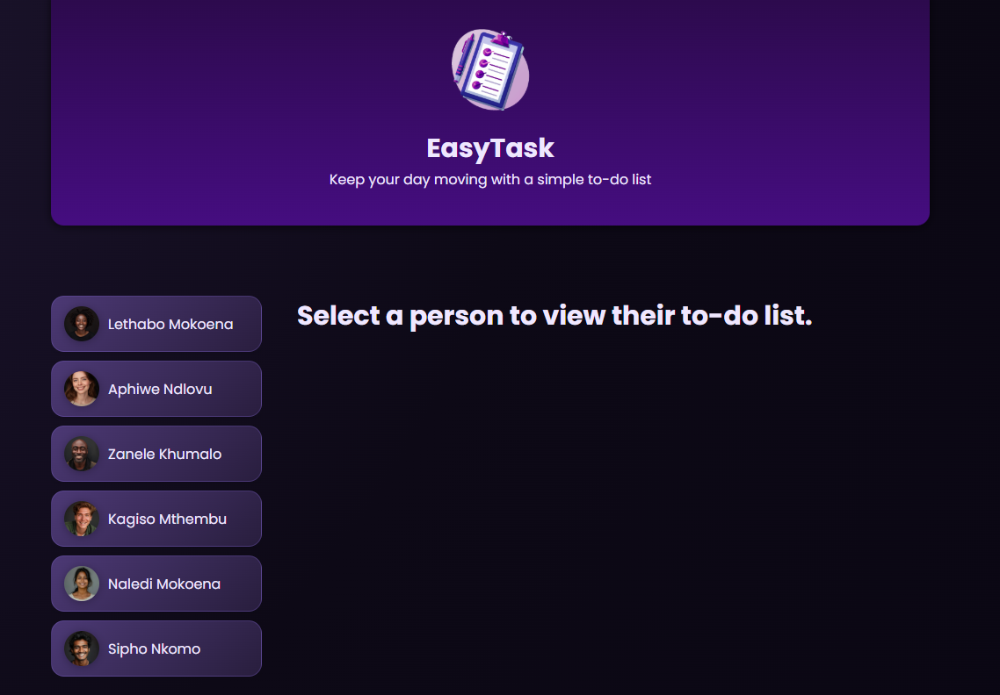

Angular To-Do List
Angular
TypeScript
HTML
CSS
LocalStorage
An Angular task management application that allows users to view, add, and remove tasks, with task data stored in the browser's localStorage.
The application provides a simple interface where users can select a user and manage their associated tasks directly from the browser.
Key Features:
- Display a list of users
- Select a user to view their tasks
- Add new tasks
- Remove existing tasks
- Store task data using browser localStorage
- Interactive and responsive user interface
Technical Architecture:
The application is built using Angular's component-based architecture with TypeScript for application logic. User and task functionality is separated into reusable Angular components, while localStorage is used to persist task data within the browser.
Project Screenshots
User Selection

User Selection
Select a user from the list to view and manage their tasks.
Task Management

Task List
View the selected user's tasks and manage the current task list.

Add Task
Add new tasks to the selected user's task list.
Data Persistence

Local Storage
Task data is stored in the browser's localStorage so that
changes persist between sessions.